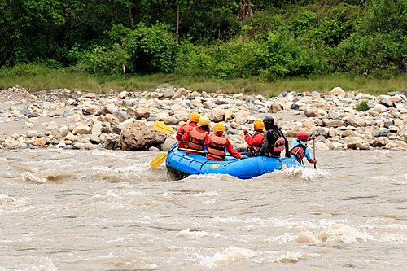

Rafting

From Wikipedia, the free encyclopedia
Rafting, kayaking and canoeing are some of the main parts of river tourism in Nepal. Prior to the boom of the tourism industry, rivers were considered holy and the idea of fun in the river was not usual to general Nepalese.[1] From zero clients in early 70s to more than 30,000 clients in 2000, it is one of the growing industries of Nepal.[2]: 45
Rafting on Trishuli River Rafting
Trishuli
History
The first commercial rafting company, Himalayan River and Exploration, was registered in 1976 by Al Read. This was the first rafting company not only in Nepal but the entire Asia. The headquarters of the company was in Kathmandu and was run by American and Nepali staffs. In 1976, over 100 Nepalese were trained for the rafting job. These trainees later started their own rafting companies.[2]: 42-51
In 1989, the Nepal Association of Rafting Agents was formally recognized by the Government. Initially, the Government required that all rafting clients pay for a permit that allowed them to participate in a rafting trip on a particular river for a specified number of days. This system was revoked in 1999.[2]: 42-51
Rivers
Rafting is allowed in all the rivers of Nepal.[citation needed] Some disturbance has been observed due to the construction of dams and weirs for hydropower production.[citation needed] Some popular river for rafting are listed below.[3][4]
River Length (km) Rapid class
Karnali River 180 Class IV – V
Tamur River 120 Class IV
Sunkoshi River 270 Class III – IV
Tamur River 120 Class IV
Kali Gandaki River 90 Class IV – V
Seti River Class III – IV
Bhotekoshi River 22 Class III to V
Trisuli River Class III – IV
Marshyangdi River 27 Class IV – V
Bheri River 105 Class III
Rafting seasons
During the monsoon from early June to mid-September, rivers are flooded and rafting is dangerous and is not carried out. During other seasons mainly spring (March–May) and autumn (September–November) is considered good for rafting.[5] During spring, flow can be quite low in smaller river. Additionally, the blowing wind on some rivers, such as the Karnali, can be an annoyance.[5]
Safety and Accidents
Safety guidelines specific to rafting has not been published. Each operator has their own safety protocols.[citation needed] Due to which accidents occur time and again every year. Few fatalities are reported every year. Some of them are:
2018
One Australian died in Karnali river.[6]
Another Australian woman died in Kayak in Pokhara.[7]
2017
A French man lost his life.[8]
2016
A Nepali boy was killed.[9]
Gallery